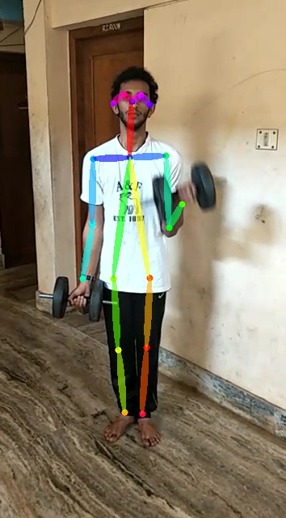

The present situation for video pose estimation is to run the whole algorithm on every frame which is time consuming. SO instead of running expensive algorithm on every frame, if we are able to obtain a cheap algorithm which can be run on intermediate frames might be able to reduce the time taken for the process. And if we are able to predict velocities of each joint location we might be able to predict the next locations of the joints. So in the process of testing the hypothesis, a dataset is created.This dataset is created using the pytorch code of Realtime 2D Human Pose estimation. Annotating every frame might be a repitituous process and it might take a lot of time and effort. So in place of mannual annotations I used a code which does that part.Some changes are done to the code taken and it is run on the data we collected.
link for the 2D Realtime Human Pose Estimation pytorch code is- Code link